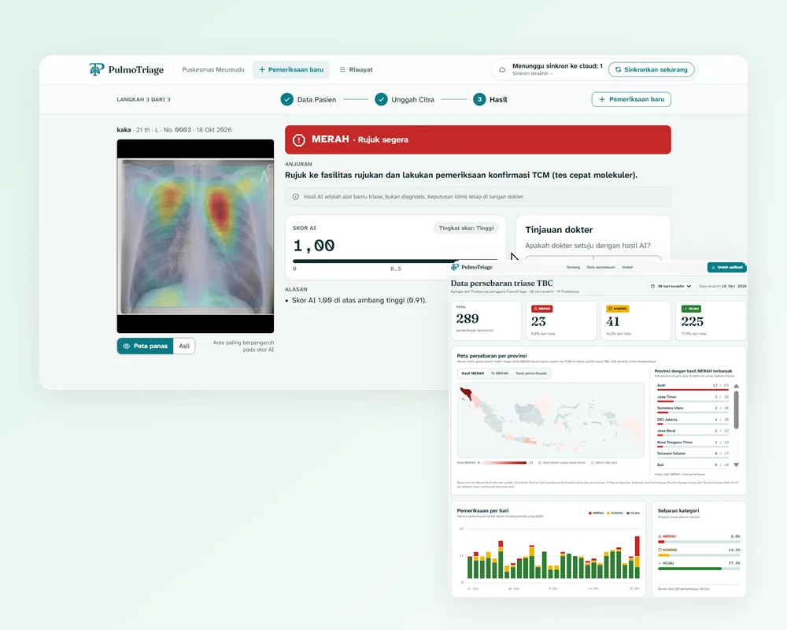

Overview
PulmoTriage helps Puskesmas (community health centers) triage suspected TB from chest X-rays without waiting for a radiologist. Indonesia has too few radiologists, so results can sit in a queue for days or weeks while a contagious patient waits.
A health worker enters basic symptoms and uploads a chest X-ray. The app checks image quality, then gives a triage result (green, yellow, or red) with a Grad-CAM heatmap showing where the model looked. A doctor reviews it and makes the final decision, and the app drafts a referral letter automatically. It is a triage aid, not a diagnosis.
It runs fully offline on an ordinary laptop, with no GPU. When internet is available, it syncs only anonymous aggregate data, so patient names never leave the clinic computer.
The app came together during the 20-hour onsite final of INFEST XII 2026 (17–18 October). I built the model, backend, cloud and deployment, licensing, installer, and the pitch deck.
What it includes
- Offline web app with a TB triage model (EfficientNet-B0, Grad-CAM, ONNX Runtime), combined with symptoms for the triage decision
- Doctor review step and an auto-filled referral letter (PDF)
- Windows installer with in-app update notice
- Digitally signed licenses, one per Puskesmas and tied to one computer (Ed25519), checked without internet
- A GUI tool for the team to issue licenses by picking province, regency, then Puskesmas, covering about 10,000 Puskesmas
- Public portal with a province heatmap and trend charts. Small counts are hidden to protect privacy.
Highlights
The triage result, the public portal, and the moments on stage.
Triage result with Grad-CAM heatmap and doctor review
Public portal: province heatmap and trends (demo data)
Tim Sleber with the 3rd place award
Hackathon winners announced
3rd place certificate